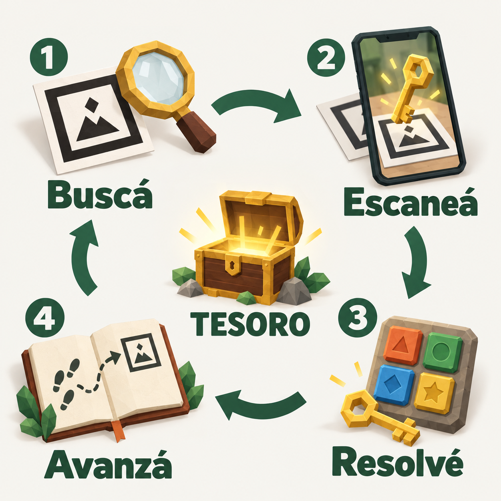

La habitación que no existe
Poné a prueba tu ingenio: seguí las pistas, resolvé los enigmas y encontrá el tesoro. ¿Aceptás el desafío?
Activá la cámara para empezar.
Elegí un marcador para simular el escaneo.
Pistas encontradas
Cómo jugar
Jugás desde el navegador del celular, sin instalar nada. Buscá los carteles del recorrido: al enfocarlos con la cámara aparece un objeto en realidad aumentada y se desbloquea una prueba.

-
Elegí tu apodo y empezá
Tocá Jugar, después Activar cámara y aceptá el permiso del navegador. El tiempo empieza a contar al entrar a la partida, así que conviene estar cerca del primer marcador.
-
Enfocá el marcador 01
Es el dibujo cuadrado en blanco y negro del cartel. Buscá buena luz, dejá visible todo el borde negro y mantené el celular quieto un momento. Cuando el juego lo reconozca, la cámara se apaga sola y pasás directamente a la prueba.
-
Resolvé la prueba en la pantalla
Leé la consigna y usá los botones del juego. Hay pruebas de precisión, memoria y lógica. La cámara queda apagada mientras respondés. Si salís y volvés con tu apodo, podés retomar la actividad sin escanear otra vez.
-
Guardá el dato y buscá la siguiente pista
Lo que descubrís queda en Pistas encontradas, debajo de la prueba. Volvé a leerlo cuando lo necesites. Al terminar aparece el botón para escanear el siguiente marcador. La cámara vuelve a encenderse cuando lo tocás; las etapas se completan en orden.
-
Llegá al cofre
Hay seis marcadores y ocho etapas: algunos carteles se usan más de una vez. Prestá atención a las últimas indicaciones. Al abrir el cofre vas a ver tu puntaje final y tu mejor partida quedará en la tabla.
¿Qué pasa si me equivoco o me trabo?
Podés volver a intentar. Cada error resta 20 puntos y algunas pruebas cambian o te hacen esperar unos segundos. Pedir ayuda revela una pista y resta 50 puntos por cada ayuda. Escanear un marcador fuera de orden no resta puntos.
Las primeras seis pruebas suman 100 puntos cada una y abrir el cofre suma 400. Al terminar se agrega un bono de hasta 300 puntos según el tiempo: cuanto antes llegues, más conservás.
¿Cómo sigo después y dónde queda mi puntaje?
El progreso se guarda automáticamente. Podés usar Guardar y salir y volver con el mismo apodo, en el mismo navegador y dispositivo. El tiempo sigue contando mientras estás afuera.
La tabla guarda la mejor partida terminada de cada apodo en ese navegador. Para competir en la misma tabla, jueguen por turnos en el mismo dispositivo, cada uno con su apodo. Si borrás los datos del sitio, se borran las partidas y los puntajes.
La cámara no reconoce el cartel, ¿qué hago?
Alejá un poco el celular, evitá reflejos y no tapes el borde negro ni el margen blanco. Enfocá un solo marcador a la vez. Si la cámara no abre, revisá el permiso del sitio en el navegador y usá el enlace HTTPS del juego.
Para jugar en casa podés imprimir los marcadores o mostrarlos en otra pantalla y enfocarlos con el celular. La ilustración de arriba solo explica el recorrido; los marcadores para jugar están en el enlace de abajo.
¿Querés practicar primero? Escribí tu apodo y elegí Probar sin cámara en el inicio. Los botones 01–06 simulan el escaneo. Podés conocer las pruebas, pero esa partida no entra en la tabla de puntajes.
Ver e imprimir los seis marcadores ↗